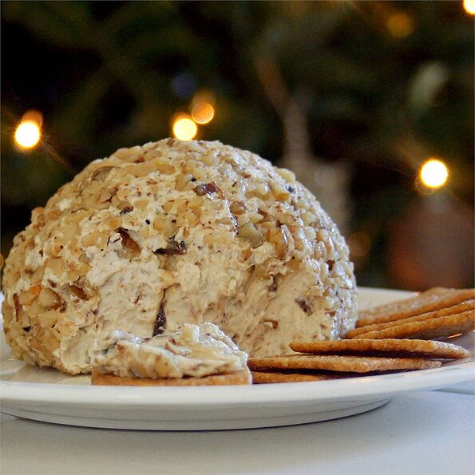

Christmas Cheeseball

Description
I look forward to this simple, traditional cheese ball every year. It has
been served during family Christmas Eve parties since before my time. The
ingredients are few and inexpensive, and might be made year-round, but I
reserve this one special appetizer for the holidays only to maintain its
specialness. I love to serve Ritz crackers with the cheese ball to bring
out its savory flavor.
Ingredients
- 1 ½ (8 ounce) packages cream cheese, softened
- 1 (2.5 ounce) package thinly sliced smoked beef, chopped
- 1 (2.25 ounce) can pimento-stuffed green olives, chopped
- 1 small Vidalia or other sweet onion, minced
- 2 dashes Worcestershire sauce, or to taste
- 1 cup chopped walnuts
Steps
-
Mix the cream cheese, beef, olives, onion, and Worcestershire sauce
together in a bowl until evenly blended. Keeping the mixture in the
bowl, scrape it into a semi-ball shape. Cover, and refrigerate until
firm, at least 2 hours.
-
Place a large sheet of waxed paper on a flat surface. Sprinkle with
walnuts. Roll the cheese ball in the walnuts until completely covered.
Transfer the cheese ball to a serving plate, or rewrap with waxed paper
and refrigerate until needed.